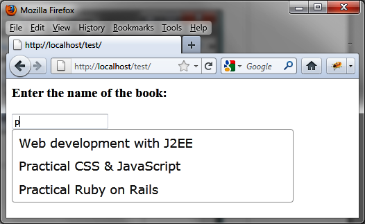
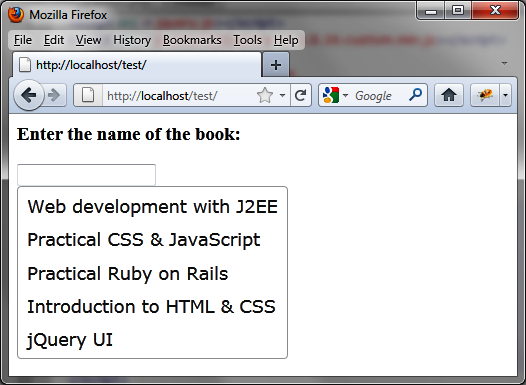
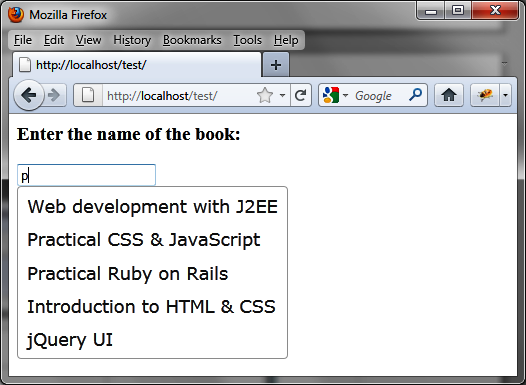
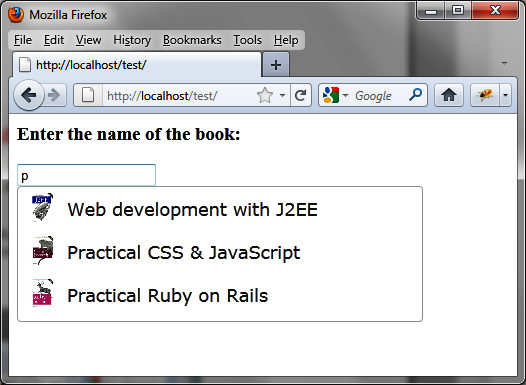

{% include JB/setup %}
{% raw %}
<div>
<div class="book" title="Examples of Using the Autocompletion Mechanism"><div class="book"><div class="book"><div class="book"><h1 class="title2"><a id="examples_of_using_the_autocompletion_mec" class="calibre1"></a>Examples of Using the Autocompletion Mechanism</h1></div></div></div><p class="calibre7">Now that you understand how to use and manage suggestion lists,
    let’s create some scripts that implement the autocompletion
    mechanism.</p><div class="book" title="Specifying the Width of the List of Suggestions"><div class="book"><div class="book"><div class="book"><h2 class="title5"><a id="specifying_the_width_of_the_list_of_sugg" class="calibre1"></a>Specifying the Width of the List of Suggestions</h2></div></div></div><p class="calibre7">jQuery UI itself calculates the width of the list of suggestions
      based on its content. However, it may be useful to specify the width of
      the list manually. In this example, we set the list of suggestions to
      400 pixels wide (see <a class="ulink" href="ch09s05.html#manual_width_setting_for_a_list_of_sugge" title="Figure 9-4. Manual width setting for a list of suggestions">Figure 9-4</a>):</p><a id="I_programlisting9_d1e7714" class="firstname"></a><pre class="programlisting">&lt;script src = jquery.js&gt;&lt;/script&gt;
&lt;script src = jqueryui/js/jquery-ui-1.8.16.custom.min.js&gt;&lt;/script&gt;

&lt;link rel=stylesheet type=text/css
      href=jqueryui/css/smoothness/jquery-ui-1.8.16.custom.css /&gt;

&lt;h3&gt;Enter the name of the book:&lt;/h3&gt;
&lt;input id=book /&gt;

&lt;script&gt;

// array of items to be proposed in the list of suggestions
var books = ["Web development with J2EE", "Practical CSS &amp; JavaScript",
             "Practical Ruby on Rails", "Introduction to HTML &amp; CSS",
             "jQuery UI"];

<span class="firstname"><strong class="userinput">$("input#book").autocomplete ({</strong></span>
  <span class="firstname"><strong class="userinput">source : books,</strong></span>
  <span class="firstname"><strong class="userinput">open : function (event)</strong></span>
  <span class="firstname"><strong class="userinput">{</strong></span>
    <span class="firstname"><strong class="userinput">var $ul = $(this).autocomplete ("widget");</strong></span>
    <span class="firstname"><strong class="userinput">$ul.css ("width", "400px");</strong></span>
  <span class="firstname"><strong class="userinput">}</strong></span>
<span class="firstname"><strong class="userinput">});</strong></span>

&lt;/script&gt;</pre><p class="calibre7">The list corresponds to the <code class="literal">&lt;ul&gt;</code> (created automatically by jQuery UI
      when using the <code class="literal">autocomplete (options)</code>
      method). It was explained earlier that it was easier to retrieve it
      using the <code class="literal">autocomplete ("widget")</code>
      instruction.</p><p class="calibre7">Once this <code class="literal">&lt;ul&gt;</code> element is
      recovered (through its jQuery class object), simply resize it using the
      <code class="literal">css ()</code> instruction. This can be done
      only when the list will be displayed, hence the use of the <code class="literal">options.open</code> option.</p><div class="book"><div class="figure"><a id="manual_width_setting_for_a_list_of_sugge" class="firstname"></a><div class="book"><div class="book"><a id="I_mediaobject9_d1e7766" class="firstname"></a></div></div><p class="title4">Figure 9-4. Manual width setting for a list of suggestions</p></div></div></div><div class="book" title="Displaying a List of Suggestions at the Opening of the HTML Page"><div class="book"><div class="book"><div class="book"><h2 class="title5"><a id="displaying_a_list_of_suggestions_at_the" class="calibre1"></a>Displaying a List of Suggestions at the Opening of the HTML
      Page</h2></div></div></div><p class="calibre7">The list of suggestions will appear as soon as the required number
      of characters is entered in the input field (this number is indicated in
      <code class="literal">options.minLength</code>). This means having
      to type at least one character (a value of 0 in <code class="literal">options.minLength</code> is not enough to cause the
      immediate display of the list of suggestions).</p><p class="calibre7">Let’s create an example that shows a list of suggestions as soon
      as the script runs (users are not required to enter any characters in
      the input field). To do this, use the <code class="literal">auto</code><span class="firstname"><code class="literal">complete ("search", "")</code></span> method at the
      start of the script. The required number of characters here is 0
      (specified by the empty string, <code class="literal">""</code>).
      The list will be displayed with all possible values and won’t permit
      entries in the text field (<a class="ulink" href="ch09s05.html#list_of_suggestions_displayed_at_page_lo" title="Figure 9-5. List of suggestions displayed at page load">Figure 9-5</a>):</p><a id="I_programlisting9_d1e7795" class="firstname"></a><pre class="programlisting">&lt;script src = jquery.js&gt;&lt;/script&gt;
&lt;script src = jqueryui/js/jquery-ui-1.8.16.custom.min.js&gt;&lt;/script&gt;

&lt;link rel=stylesheet type=text/css
      href=jqueryui/css/smoothness/jquery-ui-1.8.16.custom.css /&gt;

&lt;h3&gt;Enter the name of the book:&lt;/h3&gt;
&lt;input id=book /&gt;

&lt;script&gt;

// array of items to be proposed in the list of suggestions
var books = ["Web development with J2EE", "Practical CSS &amp; JavaScript",
             "Practical Ruby on Rails", "Introduction to HTML &amp; CSS",
             "jQuery UI"];

<span class="firstname"><strong class="userinput">$("input#book").autocomplete ({</strong></span>
  <span class="firstname"><strong class="userinput">source : books,</strong></span>
  <span class="firstname"><strong class="userinput">minLength : 0</strong></span>
<span class="firstname"><strong class="userinput">}).autocomplete ("search", "");</strong></span>

&lt;/script&gt;</pre><div class="book"><div class="figure"><a id="list_of_suggestions_displayed_at_page_lo" class="firstname"></a><div class="book"><div class="book"><a id="I_mediaobject9_d1e7812" class="firstname"></a></div></div><p class="title4">Figure 9-5. List of suggestions displayed at page load</p></div></div><p class="calibre7">Rather than showing a list of suggestions when the page is opened,
      we can show the list when the user clicks in the input field, as
      explained in the following example.</p></div><div class="book" title="Displaying a List of Suggestions at the Entry of the Cursor in the Input Field"><div class="book"><div class="book"><div class="book"><h2 class="title5"><a id="displaying_a_list_of_suggestions_at" class="calibre1"></a>Displaying a List of Suggestions at the Entry of the Cursor in
      the Input Field</h2></div></div></div><p class="calibre7">This is a variant of previous script. When the user clicks in the
      input field, the list is displayed immediately. The search for list
      items to display is this time related to the focus event on the input
      field:</p><a id="I_programlisting9_d1e7824" class="firstname"></a><pre class="programlisting">&lt;script src = jquery.js&gt;&lt;/script&gt;
&lt;script src = jqueryui/js/jquery-ui-1.8.16.custom.min.js&gt;&lt;/script&gt;

&lt;link rel=stylesheet type=text/css
      href=jqueryui/css/smoothness/jquery-ui-1.8.16.custom.css /&gt;

&lt;h3&gt;Enter the name of the book:&lt;/h3&gt;
&lt;input id=book /&gt;

&lt;script&gt;

// array of items to be proposed in the list of suggestions
var books = ["Web development with J2EE", "Practical CSS &amp; JavaScript",
             "Practical Ruby on Rails", "Introduction to HTML &amp; CSS",
             "jQuery UI"];

<span class="firstname"><strong class="userinput">$("input#book").autocomplete ({</strong></span>
  <span class="firstname"><strong class="userinput">source : books,</strong></span>
  <span class="firstname"><strong class="userinput">minLength : 0</strong></span>
<span class="firstname"><strong class="userinput">}).focus (function (event)</strong></span>
<span class="firstname"><strong class="userinput">{</strong></span>
  <span class="firstname"><strong class="userinput">$(this).autocomplete ("search", "");</strong></span>
<span class="firstname"><strong class="userinput">});</strong></span>

&lt;/script&gt;</pre></div><div class="book" title="Producing an Effect on the Appearance of the List of Suggestions"><div class="book"><div class="book"><div class="book"><h2 class="title5"><a id="producing_an_effect_on_the_appearance_of" class="calibre1"></a>Producing an Effect on the Appearance of the List of
      Suggestions</h2></div></div></div><p class="calibre7">By default, the list is displayed as soon as it is returned by
      jQuery UI. It is possible to produce an effect before it is displayed,
      such as a slideDown effect:</p><a id="I_programlisting9_d1e7853" class="firstname"></a><pre class="programlisting">&lt;script src = jquery.js&gt;&lt;/script&gt;
&lt;script src = jqueryui/js/jquery-ui-1.8.16.custom.min.js&gt;&lt;/script&gt;

&lt;link rel=stylesheet type=text/css
      href=jqueryui/css/smoothness/jquery-ui-1.8.16.custom.css /&gt;

&lt;h3&gt;Enter the name of the book:&lt;/h3&gt;
&lt;input id=book /&gt;

&lt;script&gt;

// array of items to be proposed in the list of suggestions
var books = ["Web development with J2EE", "Practical CSS &amp; JavaScript",
             "Practical Ruby on Rails", "Introduction to HTML &amp; CSS",
             "jQuery UI"];

$("input#book").autocomplete ({
  source : books,
  open : function (event)
  {
    var $ul = $(this).autocomplete ("widget");
    $ul.hide ().slideDown (600);
  }
});

&lt;/script&gt;</pre><p class="calibre7">Here, we use the <code class="literal">open</code> option,
      which corresponds to an event called just before the display of the
      list. Before this, we hide this list with <code class="literal">hide
      ()</code> so it can be displayed by the slideDown effect.</p><p class="calibre7">If you use a hide effect, these effects are more complex to
      implement, due to the <span class="firstname">updating</span> of the
      input field. Although the effect occurs, it inhibits updating in the
      input field with the value of the selected list item.</p></div><div class="book" title="Dynamically Creating a List of Suggestions"><div class="book"><div class="book"><div class="book"><h2 class="title5"><a id="dynamically_creating_a_list_of_suggestio" class="calibre1"></a>Dynamically Creating a List of Suggestions</h2></div></div></div><p class="calibre7">The above examples all use a fixed list of suggestions, known at
      the start of the script. jQuery UI allows us to specify in <code class="literal">options.source</code> a source of data as a callback
      function that will be used to build the list of suggestions:</p><a id="I_programlisting9_d1e7877" class="firstname"></a><pre class="programlisting">&lt;script src = jquery.js&gt;&lt;/script&gt;
&lt;script src = jqueryui/js/jquery-ui-1.8.16.custom.min.js&gt;&lt;/script&gt;

&lt;link rel=stylesheet type=text/css
      href=jqueryui/css/smoothness/jquery-ui-1.8.16.custom.css /&gt;

&lt;h3&gt;Enter the name of the book:&lt;/h3&gt;
&lt;input id=book /&gt;

&lt;script&gt;

<span class="firstname"><strong class="userinput">$("input#book").autocomplete ({</strong></span>
  <span class="firstname"><strong class="userinput">source : function (request, callback)</strong></span>
  <span class="firstname"><strong class="userinput">{</strong></span>
    <span class="firstname"><strong class="userinput">// array of items to be proposed in the list of suggestions</strong></span>
    <span class="firstname"><strong class="userinput">var books = ["Web development with J2EE", "Practical CSS &amp; JavaScript",</strong></span>
                 <span class="firstname"><strong class="userinput">"Practical Ruby on Rails", "Introduction to HTML &amp; CSS",</strong></span>
                 <span class="firstname"><strong class="userinput">"jQuery UI"];</strong></span>

    <span class="firstname"><strong class="userinput">callback (books);</strong></span>
  <span class="firstname"><strong class="userinput">}</strong></span>
<span class="firstname"><strong class="userinput">a});</strong></span>

&lt;/script&gt;</pre><p class="calibre7">In <code class="literal">options.source</code>, we indicate
      a function used to build the list of suggestions. This function takes
      two parameters:</p><div class="book"><ul class="itemizedlist"><li class="listitem"><p class="calibre7"><code class="literal">request</code> is an object having
          the <code class="literal">term</code> property indicating the
          text entered in the input field (property not used here).</p></li><li class="listitem"><p class="calibre7"><code class="literal">callback</code> is a function that
          must be called at the end of treatment, indicating as a parameter
          the list of suggestions (<code class="literal">books</code>
          here), in array form.</p></li></ul></div><p class="calibre7">In this example, the text typed by the user is not used, so the
      returned list is always the same, regardless of the value entered by the
      user (<a class="ulink" href="ch09s05.html#list_of_suggestions_created_dynamically" title="Figure 9-6. List of suggestions created dynamically">Figure 9-6</a>). We
      will see in the following section how to consider the characters entered
      in the input field.</p><div class="book"><div class="figure"><a id="list_of_suggestions_created_dynamically" class="firstname"></a><div class="book"><div class="book"><a id="I_mediaobject9_d1e7939" class="firstname"></a></div></div><p class="title4">Figure 9-6. List of suggestions created dynamically</p></div></div></div><div class="book" title="Dynamically Creating a List of Suggestions Based on the Input Data"><div class="book"><div class="book"><div class="book"><h2 class="title5"><a id="dynamically_creating_a_list_of_sugge" class="calibre1"></a>Dynamically Creating a List of Suggestions Based on the Input
      Data</h2></div></div></div><p class="calibre7">We can improve the previous program by taking the input and making
      an Ajax call to the server, to retrieve a list of suggestions to
      display.</p><p class="calibre7">The books are stored in a MySQL database (here the <code class="literal">test</code> database containing the books table). Its
      description and its contents are as follows:</p><a id="I_programlisting9_d1e7954" class="firstname"></a><pre class="programlisting"><span class="firstname"><strong class="userinput">CREATE DATABASE IF NOT EXISTS test;</strong></span>
<span class="firstname"><strong class="userinput">USE test;</strong></span>
<span class="firstname"><strong class="userinput">DROP TABLE IF EXISTS books;</strong></span>
<span class="firstname"><strong class="userinput">CREATE TABLE books (</strong></span>
  <span class="firstname"><strong class="userinput">id int(10) unsigned NOT NULL auto_increment,</strong></span>
  <span class="firstname"><strong class="userinput">title varchar(100) NOT NULL,</strong></span>
  <span class="firstname"><strong class="userinput">PRIMARY KEY  (id)</strong></span>
<span class="firstname"><strong class="userinput">);</strong></span>

<span class="firstname"><strong class="userinput">INSERT INTO books (id, title) VALUES</strong></span>
 <span class="firstname"><strong class="userinput">(1,"Web development with J2EE"),</strong></span>
 <span class="firstname"><strong class="userinput">(2,"Practical CSS &amp; JavaScript"),</strong></span>
 <span class="firstname"><strong class="userinput">(3,"Practical Ruby on Rails"),</strong></span>
 <span class="firstname"><strong class="userinput">(4,"Introduction to HTML &amp; CSS"),</strong></span>
 <span class="firstname"><strong class="userinput">(5,"jQuery UI");</strong></span>

<span class="firstname"><strong class="userinput">Perform an ajax call that returns the list of suggestions to display</strong></span>

&lt;script src = jquery.js&gt;&lt;/script&gt;
&lt;script src = jqueryui/js/jquery-ui-1.8.16.custom.min.js&gt;&lt;/script&gt;

&lt;link rel=stylesheet type=text/css
      href=jqueryui/css/smoothness/jquery-ui-1.8.16.custom.css /&gt;

&lt;h3&gt;Enter the name of the book:&lt;/h3&gt;
&lt;input id=book /&gt;

&lt;script&gt;

<span class="firstname"><strong class="userinput">$("input#book").autocomplete ({</strong></span>
  <span class="firstname"><strong class="userinput">source : function (request, callback)</strong></span>
  <span class="firstname"><strong class="userinput">{</strong></span>
    <span class="firstname"><strong class="userinput">var data = { term : request.term };</strong></span>
    <span class="firstname"><strong class="userinput">$.ajax ({</strong></span>
      <span class="firstname"><strong class="userinput">url : "action.php",</strong></span>
      <span class="firstname"><strong class="userinput">data : data,</strong></span>
      <span class="firstname"><strong class="userinput">complete : function (xhr, result)</strong></span>
      <span class="firstname"><strong class="userinput">{</strong></span>
        <span class="firstname"><strong class="userinput">if (result != "success") return;</strong></span>
        <span class="firstname"><strong class="userinput">var response = xhr.responseText;</strong></span>
        <span class="firstname"><strong class="userinput">var books = [];</strong></span>

        <span class="firstname"><strong class="userinput">$(response).filter ("li").each (function ()</strong></span>
        <span class="firstname"><strong class="userinput">{</strong></span>
          <span class="firstname"><strong class="userinput">books.push ($(this).text ());</strong></span>
        <span class="firstname"><strong class="userinput">});</strong></span>
        <span class="firstname"><strong class="userinput">callback (books);</strong></span>
      <span class="firstname"><strong class="userinput">}</strong></span>
    <span class="firstname"><strong class="userinput">});</strong></span>
  <span class="firstname"><strong class="userinput">}</strong></span>
<span class="firstname"><strong class="userinput">});</strong></span>

&lt;/script&gt;</pre><p class="calibre7">Text entered by the user is retrieved in <code class="literal">request.term.</code> An Ajax call is then made. At
      its completion, the server response is analyzed: it retrieves the
      contents of each <code class="literal">&lt;li&gt;</code> <span class="firstname">element,</span> which we put in a books array, and it
      is then returned by <code class="literal">callback (books)</code>
      to be displayed.</p><p class="calibre7">The server program processing the Ajax request is shown in the
      following <em class="calibre4">action.php</em> file:</p><a id="I_programlisting9_d1e8087" class="firstname"></a><pre class="programlisting">&lt;?
  $term = $_REQUEST["term"];
  $term = utf8_decode ($term);

  $bd = mysql_connect ("localhost", "root", "pwd");
  $ret = mysql_select_db ("test", $bd);
  $query = sprintf (
         "SELECT * FROM books WHERE title LIKE '%%%s%%'",
         mysql_real_escape_string($term));

  // Query execution
  $result = mysql_query($query);
  if ($result)
  {
    // Use the result (sent to the browser)
    while ($row = mysql_fetch_assoc($result))
    {
      echo ("&lt;li&gt;" . utf8_encode ($row["title"]) . "&lt;/li&gt;");
    }
    mysql_free_result($result);
  }

  mysql_close ($bd);
?&gt;</pre><p class="calibre7">This example displays the list of suggestions as text. It is also
      possible to insert images in list items, such as images associated with
      each book. This is discussed in the following section.</p></div><div class="book" title="Inserting Images in the List of Suggestions"><div class="book"><div class="book"><div class="book"><h2 class="title5"><a id="inserting_images_in_the_list_of_suggesti" class="calibre1"></a>Inserting Images in the List of Suggestions</h2></div></div></div><p class="calibre7">Autocompletion functionality provided by jQuery UI does not, as
      standard, insert <span class="firstname">anything</span> other than
      text. You can insert other HTML elements in the list, with some
      manipulation of the DOM tree.</p><p class="calibre7">To explain this, let’s take the book example. We now want to add a
      picture in front of each book title. If no image is available for a
      book, a default image is displayed instead (<a class="ulink" href="ch09s05.html#images_in_the_list_of_suggestions" title="Figure 9-7. Images in the list of suggestions">Figure 9-7</a>).</p><div class="book"><div class="figure"><a id="images_in_the_list_of_suggestions" class="firstname"></a><div class="book"><div class="book"><a id="I_mediaobject9_d1e8106" class="firstname"></a></div></div><p class="title4">Figure 9-7. Images in the list of suggestions</p></div></div><p class="calibre7">To do this, you can start again with the written programs above.
      The database is modified to take account of the picture field containing
      the image filename associated with each book. This field will be set to
      NULL in the database if you have to display the default image:</p><a id="I_programlisting9_d1e8113" class="firstname"></a><pre class="programlisting">CREATE DATABASE IF NOT EXISTS test;
USE test;
DROP TABLE IF EXISTS books;
CREATE TABLE books (
  id int(10) unsigned NOT NULL auto_increment,
  title varchar(100) NOT NULL,
  <span class="firstname"><strong class="userinput">picture varchar(100),</strong></span>
  PRIMARY KEY  (id)
);

INSERT INTO books (id, title, picture) VALUES
 (1,"Web development with J2EE", "j2ee.jpg"),
 (2,"Practical CSS &amp; JavaScript", "javascript.jpg"),
 (3,"Practical Ruby on Rails", "rails.jpg"),
 (4,"Introduction to HTML &amp; CSS", "html.jpg"),
 (5,"jQuery UI", NULL);</pre><p class="calibre7">The jQuery UI book does not have an associated image, so it uses
      the insertion of a null value for the picture field. Each image file
      (<em class="calibre4">j2ee.jpg</em>, <em class="calibre4">javascript.jpg</em>, etc.) will be inserted into
      an <em class="calibre4">images</em> directory on the
      server.</p><p class="calibre7">The program on the server becomes the following
      <em class="calibre4">action.php</em> file:</p><a id="I_programlisting9_d1e8134" class="firstname"></a><pre class="programlisting">&lt;?
  $term = $_REQUEST["term"];
  $term = utf8_decode ($term);

  $bd = mysql_connect ("localhost", "root",
"pwd");
  $ret = mysql_select_db ("test", $bd);
  $query = sprintf (
         "SELECT * FROM books WHERE title LIKE '%%%s%%'",
         mysql_real_escape_string($term));

  // Query execution
  $result = mysql_query($query);
  if ($result)
  {
    // Use the result (sent to the browser)
    header ("content-type:text/xml");    // sending XML!
    echo ("&lt;books&gt;");
    while ($row = mysql_fetch_assoc($result))
    {
      echo ("&lt;li&gt;");
      echo ("&lt;title&gt;"
            .
utf8_encode (str_replace ("&amp;", "&amp;amp;", $row["title"]))
            .
"&lt;/title&gt;");
      echo ("&lt;picture&gt;" . utf8_encode
($row["picture"]) . "&lt;/picture&gt;");
      echo ("&lt;/li&gt;");
    }
    echo ("&lt;/books&gt;");
    mysql_free_result($result);
  }

  mysql_close ($bd);
?&gt;</pre><p class="calibre7">Compared with the previous program, the change is in the format of
      data returned. Indeed, we must now return the book title and name of the
      image file. For this, we use <code class="literal">&lt;title&gt;</code> and <code class="literal">&lt;picture&gt;</code> tags grouped in a <code class="literal">&lt;li&gt;</code> tag. Since we use non-HTML tag
      names (as <code class="literal">&lt;picture&gt;</code>), it is
      necessary to indicate that the server returns XML, hence the <code class="literal">header ("content-type:text/xml")</code>
      statement.</p><p class="calibre7">In addition, the titles of the books may contain special XML
      characters such as &amp;. This character must be converted to <code class="literal">&amp;amp</code> so that the JavaScript program can
      correctly <span class="firstname">interpret</span> the result given by
      the server.</p><p class="calibre7">The program of the HTML page is as follows:</p><a id="I_programlisting9_d1e8164" class="firstname"></a><pre class="programlisting">&lt;script src = jquery.js&gt;&lt;/script&gt;
&lt;script src = jqueryui/js/jquery-ui-1.8.16.custom.min.js&gt;&lt;/script&gt;

&lt;link rel=stylesheet type=text/css
      href=jqueryui/css/smoothness/jquery-ui-1.8.16.custom.css /&gt;

&lt;h3&gt;Enter the name of the book:&lt;/h3&gt;
&lt;input id=book /&gt;

&lt;script&gt;

$("input#book").autocomplete ({
  <span class="firstname"><strong class="userinput">source : function (request, callback)</strong></span>
  {
    var data = { term : request.term };
    $.ajax ({
      url : "action.php",
      data : data,
      complete : function (xhr, result)
      {
        if (result != "success") return;
        var response = xhr.responseXML;
        var books = [];

        // recovery of titles
        $(response).find ("li title").each (function ()
        {
          books.push ($(this).text ());
        });

        // insertion of titles
        callback (books);

        // insertion of images
        var $ul = $("input#book").autocomplete ("widget");
        $(response).find ("li picture").each (function (index)
        {
          var src = $(this).text () || "default.jpg";
          $ul.find ("li:eq(" + index +") a")
               .wrapInner ("&lt;span style=position:relative;" +
                           "top:-7px;left:10px&gt;&lt;/span&gt;")
               .prepend ("&lt;img src=images/" + src + " height=30 /&gt;");
        });
      }
    });
  },
  <span class="firstname"><strong class="userinput">open : function (event)</strong></span>
  {
    var $ul = $(this).autocomplete ("widget");
    $ul.css ("width", "400px");
  }
});

&lt;/script&gt;</pre><p class="calibre7">The principle is as follows: first we build the list with the
      titles (thanks to the <code class="literal">callback
      (books)</code> instruction), then we modify the DOM tree by inserting
      a picture in front of each label title.</p><p class="calibre7">For this, the book titles are retrieved by <code class="literal">$(response).find ("li title")</code>, while the URL
      of the image files are collected by <code class="literal">$(response).find ("li picture")</code>. For each
      image (if an image does not exist, it is replaced by <em class="calibre4">default.jpg</em>), we get the <code class="literal">&lt;a&gt;</code> link previously built by the
      <code class="literal">callback (books)</code> instruction. It is
      sufficient for that link to surround the link text by a <code class="literal">&lt;span&gt;</code> element (using <code class="literal">wrapInner ()</code>) then insert the image at the
      beginning of the link (<code class="literal">prepend ()</code>
      instruction).</p></div></div></div>

{% endraw %}

